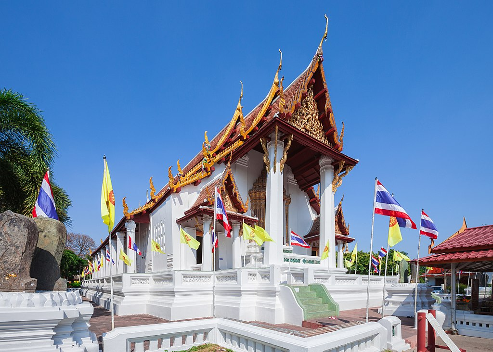

วัดหน้าพรเมรุ

- วัดหน้าพระเมรุ -
ประวัติความเป็นมา
วัดหน้าพระเมรุ หรือ วัดพระเมรุราชิการามวรวิหาร ตั้งอยู่ที่อำเภอพระนครศรีอยุธยา จังหวัดพระนครศรีอยุธยา ริมคลองสระบัวด้านเหนือของคูเมือง (แม่น้ำลพบุรีเก่า) ตรงข้ามกับพระราชวังหลวง มีชื่อเดิมว่า "วัดพระเมรุราชการาม" แต่ไม่ปรากฏหลักฐานว่าใครเป็นผู้สร้างและสร้างในสมัยใด พิจารณาได้ว่า น่าจะเป็นวัดสร้างขึ้นตรงที่ถวายพระเพลิงกษัตริย์องค์ใดองค์หนึ่งต้นสมัยอยุธยา[1] มีแต่เพียงตำนานกล่าวว่าพระองค์อินทร์ในรัชกาลสมเด็จพระรามาธิบดีที่ 2 ได้สร้างวัดนี้ขึ้นเมื่อ พ.ศ. 2046 แต่ไม่มีหลักฐานยืนยันแน่นอน[2] วัดหน้าพระเมรุเป็นวัดเดียวในกรุงศรีอยุธยาที่ไม่ถูกพม่าทำลาย และยังคงสภาพที่ดีมาก บ้างสันนิษฐานว่าอาจเป็นเพราะพม่าได้ไปตั้งกองบัญชาการอยู่ที่วัดนี้กับวัดหัสดาวาส (ซึ่งปัจจุบันเป็นวัดร้างและยังเหลือสิ่งก่อสร้างที่ไม่ถูกทำลายอยู่บ้าง) พระอุโบสถของวัดหน้าพระเมรุเป็นแบบอยุธยาซึ่งมีเสาอยู่ภายใน แต่น่าจะมาเพิ่มเสารับชายคาที่หลังในรัชสมัยสมเด็จพระเจ้าอยู่หัวบรมโกศ[3] พระประธานในอุโบสถซึ่งสร้างปลายสมัยอยุธยา หรือได้รับการบูรณะครั้งใหญ่ในช่วงนั้น เป็นพระพุทธรูปทรงเครื่องหล่อสำริดขนาดใหญ่ ด้านหลังพระอุโบสถยังมีอีกองค์หนึ่งแต่เล็กกว่า คือ พระศรีอริยเมตไตรย์
สิ่งสำคัญที่ปรากฏภายในวัดนี้ คือ พระอุโบสถและพระพุทธรูปประธานทรงเครื่องใหญ่ ซึ่งอาจจะได้รับการบูรณะครั้งใหญ่ในรัชกาลของสมเด็จพระเจ้าปราสาททอง หน้าบันของพระอุโบสถเป็นไม้แกะสลักปิดทองที่แสดงรูปนารายณ์ทรงครุฑยุดนาคประทับราหูแวดล้อมด้วยเหล่าเทวดา (ด้านหน้าพระอุโบสถมีเทวดาแวดล้อม 26 องค์ ด้านหลังพระอุโบสถมีเทวดาแวดล้อม 22 องค์ รวมเทวดา 48 องค์) คติดังกล่าวเป็นที่นิยมในสมัยโบราณที่ถือว่าพระมหากษัตริย์ทรงเป็นสมมติเทพ คือเป็นพระนารายณ์อวตาร ดังนั้น หน้าบันของโบสถ์ วิหาร หรือปราสาทราชวังที่พระมหากษัตริย์ทรงสร้างหรือทรงบูรณะก็มักจะทำรูปพระนารายณ์ทรงครุฑเป็นสำคัญ อันมีความหมายว่าวัดแห่งนี้เป็นพระอารามหลวง[4] ตัวพระอุโบสถไม่มีหน้าต่าง แต่ทำเป็นช่องลูกกรงให้แสงแดดและลมผ่านเข้าไปภายใน ลูกกรงดังกล่าวยังทำเป็นดอกเหลี่ยมหรือที่เรียกว่าผนังลูกกรงมะหวดเหลี่ยม (แบบเดียวกับผนังวิหารหลวง วัดมหาธาตุ ซึ่งเป็นศิลปะอยุธยาตอนต้น)
ชื่อเล่น น๊อต อายุ 22 ปี
- เกมส์ที่ชอบ -
- Pubg Mobile
- Fifa Online 3
- กีฬาที่ชอบเล่น -
- เพลงที่ชอบตอนนี้ -
- ติดต่อเรา -
Tel.093-2597902
Fackbook : น๊อตโตะ
Line : ID250860